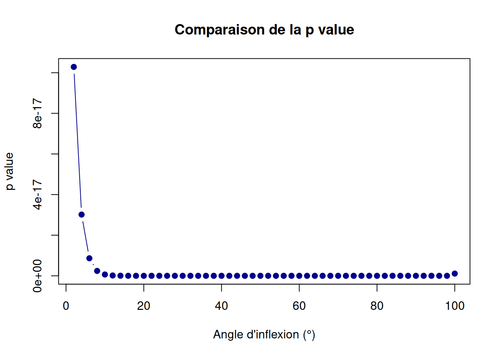
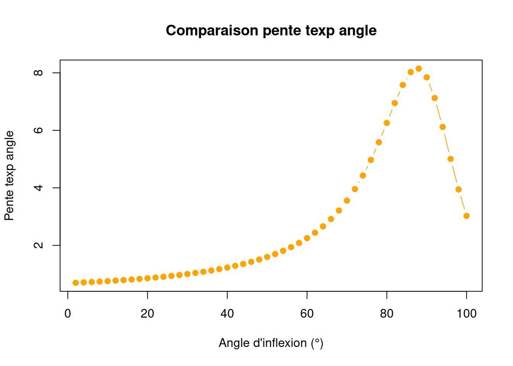
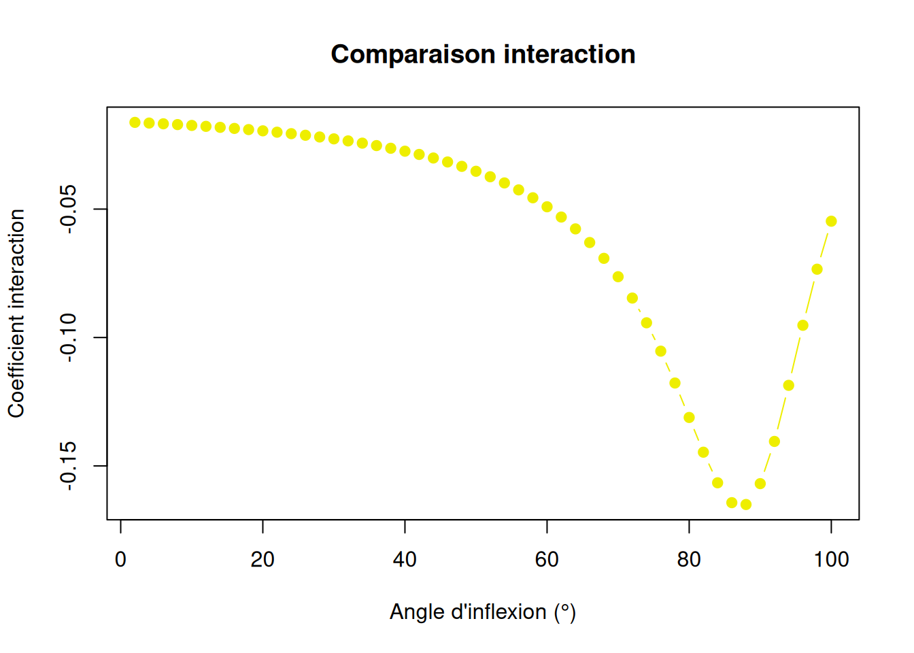

A partir des données de Thani, on obtient un masque montrant seulement les forêts publiques et les parcs et réserves naturelles de Mayotte.
Boose et al. (1994) fixe aléatoirement un angle d’inflexion de référence à 6° tandis que celui présent dans les travaux de McLaren sont de 20° afin de calculer l’exposition topographique au vent. Il faut donc établir quel angle explique le mieux les différences de végétation après Chido. J’ai regardé un modèle très simple :
lm(diffNdvi ~ angle*msw, data = dta)Où angle est une variable quantitative avec les valeurs d’exposition topographique au vent calculé avec un angle d’inflexion fixé. Pour prédire lequel est le mieux, j’ai fait varier l’exposition topographique au vent (tew) entre 2 et 20° (2, 4, 6, 8, 10, 12, 14, 16, 18, 20).
Plusieurs paramètres de modèle nous permettent de voir quel est le meilleur modèle parmi tous ces angles :
Voici le code pour plotter les résultats de ces modèles :
dta <- read.csv("~/Documents/scriptR tests/datasummary.csv", header = TRUE, sep = ",")
# names of angles variables
angles_cols <- paste0("ang", seq(2, 20, by = 2))
# empty dataframe to stock parameters
results <- data.frame(
angle = angles_cols,
AIC = NA,
R2_adj = NA,
p_value = NA,
pente_angle = NA,
pente_msw = NA,
coef_interaction = NA
)
# compute model to stock in results
for (i in 1:length(angles_cols)) {
var_angle <- angles_cols[i]
# formula for linear model
formule <- as.formula(paste("delta_ndvi ~", var_angle, "* msw_max"))
# model
model <- lm(formule, data = dta)
# get parameters
results$AIC[i] <- AIC(model)
results$R2_adj[i] <- summary(model)$adj.r.squared
results$p_value[i] <- summary(model)$coefficients[var_angle, 4]
results$pente_angle[i] <- summary(model)$coefficients[var_angle, "Estimate"]
results$pente_msw[i] <- summary(model)$coefficients[3,1]
results$coef_interaction[i] <- summary(model)$coefficients[4,1]
}
print(results) angle AIC R2_adj p_value pente_angle pente_msw
1 ang2 -15335.40 0.2659316 5.157391e-11 0.6018056 -0.02374673
2 ang4 -15343.91 0.2663163 2.382789e-11 0.6128743 -0.02324793
3 ang6 -15352.42 0.2667009 1.084491e-11 0.6247331 -0.02273364
4 ang8 -15360.95 0.2670863 4.852983e-12 0.6374515 -0.02220250
5 ang10 -15369.53 0.2674734 2.130713e-12 0.6511050 -0.02165297
6 ang12 -15378.16 0.2678628 9.157788e-13 0.6657766 -0.02108337
7 ang14 -15386.87 0.2682556 3.843578e-13 0.6815576 -0.02049178
8 ang16 -15395.68 0.2686525 1.571056e-13 0.6985492 -0.01987610
9 ang18 -15404.60 0.2690546 6.235588e-14 0.7168641 -0.01923396
10 ang20 -15413.66 0.2694626 2.395422e-14 0.7366283 -0.01856271
coef_interaction
1 -0.01468182
2 -0.01490767
3 -0.01515235
4 -0.01541728
5 -0.01570404
6 -0.01601436
7 -0.01635015
8 -0.01671356
9 -0.01710697
10 -0.01753305


La zone entière de Mayotte (masqué) correspond à plus de 20 000 observations donc j’ai voulu tester sur un sous-echantillon qui est l’îlot de Mbouzi (718 observations)
print(resultsMbouzi) angle AIC R2_adj p_value pente_angle pente_msw
1 ang2 -1630.244 0.4510735 0.0005971688 -22.87953 -0.02041710
2 ang4 -1632.433 0.4531959 0.0005751368 -22.93997 -0.03336377
3 ang6 -1634.614 0.4553029 0.0005529949 -23.03075 -0.04639252
4 ang8 -1636.793 0.4573991 0.0005307698 -23.15240 -0.05953911
5 ang10 -1638.973 0.4594884 0.0005084864 -23.30567 -0.07284042
6 ang12 -1641.158 0.4615751 0.0004861680 -23.49154 -0.08633487
7 ang14 -1643.354 0.4636631 0.0004638372 -23.71122 -0.10006290
8 ang16 -1645.563 0.4657565 0.0004415169 -23.96621 -0.11406744
9 ang18 -1647.791 0.4678590 0.0004192304 -24.25825 -0.12839445
10 ang20 -1650.042 0.4699748 0.0003970028 -24.58944 -0.14309357
coef_interaction
1 0.3716022
2 0.3725778
3 0.3740465
4 0.3760170
5 0.3785015
6 0.3815159
7 0.3850801
8 0.3892179
9 0.3939582
10 0.3993346


De plus, j’ai tenté avec des sous-échantillon aléatoires, les résultats sont à chaque fois similaires.
En calculant l’exposition topographique pour des angles allant jusqu’à 100°, on peut voir le R maximum, l’AIC minimum ainsi que les différentes pentes et c’est aux alentours de 80°. Est-ce que cela est pertinent du coup ?






J’ai fait quelques cartes de différences des ecposition topographiques calculées à partir de différents angles et je les ai comparées avec l’exposition topographique de référence (à 6°).
Si les différences sont :

Le modèle (Wind Exposure Model WEM) que l’on recherche à faire intègre le vent (MSW) et l’exposition topographique au vent (TEW) sur le temps
\[\text{WEM} = \int \text{MSW}(x,y,t) \times \text{TEW}(x,y,t) \, dt\]
#get msw layers
pf <- spatialBehaviour(sts, product = "Profiles", verbose = 0)
speed_layers <- pf[[grep("CHIDO_Speed", names(pf))]]
#project same as dem_final to match tew
project_raster <- project(speed_layers, dem_final)
speed_aligned <- crop(project_raster, dem_final)
speed_layers <- mask(speed_aligned, dem_final)
# get tew
tew6 <- computeTEW(sts, dem_final, pf, product = "PixProfiles", verbose = 0)
# change scale of tew (-1/1 --> 0/1)
tew_min <- global(tew6, "min", na.rm = TRUE) |> min()
tew_max <- global(tew6, "max", na.rm = TRUE) |> max()
tew6_norm <- (tew6 - tew_min) / (tew_max - tew_min)
#check
global(tew6_norm, range, na.rm = TRUE) X1 X2
CHIDO_TEW_33_Pix 0.2534612684 0.8422313
CHIDO_TEW_33.33_Pix 0.1019624458 0.9633329
CHIDO_TEW_33.67_Pix 0.0454678055 0.9632761
CHIDO_TEW_34_Pix 0.0421577614 0.9631074
CHIDO_TEW_34.33_Pix 0.0382609396 0.9627831
CHIDO_TEW_34.67_Pix 0.0338964679 0.9622282
CHIDO_TEW_35_Pix 0.0276132014 0.9609647
CHIDO_TEW_35.33_Pix 0.0238125509 0.9599913
CHIDO_TEW_35.67_Pix 0.0191349556 0.9584029
CHIDO_TEW_36_Pix 0.0124162546 0.9549287
CHIDO_TEW_36.33_Pix 0.0067615690 0.9506978
CHIDO_TEW_36.67_Pix 0.0001227468 0.9490159
CHIDO_TEW_37_Pix 0.0002835617 0.9627564
CHIDO_TEW_37.33_Pix 0.0129672625 0.9697588
CHIDO_TEW_37.67_Pix 0.0000000000 0.9882949
CHIDO_TEW_38_Pix 0.0986668981 1.0000000
CHIDO_TEW_38.33_Pix 0.1004002820 0.9859350
CHIDO_TEW_38.67_Pix 0.1002397343 0.9773306
CHIDO_TEW_39_Pix 0.1007932791 0.9733471
CHIDO_TEW_39.33_Pix 0.1006514824 0.9732462
CHIDO_TEW_39.67_Pix 0.1005470928 0.9733964
CHIDO_TEW_40_Pix 0.1004075146 0.9748840
CHIDO_TEW_40.33_Pix 0.1001801587 0.9787631
CHIDO_TEW_40.67_Pix 0.1001585852 0.9817562dt <- 1 # hour
n_t <- nlyr(speed_layers)
# integer layer by layer
wem <- app(speed_layers * tew6_norm, sum, na.rm = TRUE) * dt
names(wem) <- "wem"
plot(wem, main = "wem cumulé")
Pour chaque cellule, on additionne à chaque heure MSW × TEW. Une cellule avec un WEM élevé a reçu beaucoup de vent et est topographiquement exposée, de façon cumulée sur toute la période.
On peut faire quelques statistiques descriptives sur ce modèle. Tout d’abord un petit résumé numérique.
stats_globales <- global(wem, c("min", "max", "mean", "sd"), na.rm = TRUE)
print(stats_globales) min max mean sd
wem 166.0065 385.7545 312.522 28.02355On peut aussi faire un histogramme de distribution spatiale
hist(wem,
main = "Distribution spatiale du wem",
xlab = "WEM",
ylab = "Fréquence",
col = "steelblue",
border = "white",
breaks = 50)Warning: [hist] a sample of 60% of the cells was used (of which 99% was NA)
On peut aussi voir la contribution de chaque couche.
# moyenne spatiale du produit MSW × TEW à chaque pas de temps
contrib_temporelle <- global(speed_layers * tew6_norm, "mean", na.rm = TRUE)
contrib_temporelle$pas <- seq_len(nrow(contrib_temporelle))
names(contrib_temporelle)[1] <- "contribution_moyenne"
plot(contrib_temporelle$pas,
contrib_temporelle$contribution_moyenne,
type = "l",
col = "steelblue",
lwd = 1.5,
main = "Contribution moyenne par pas de temps",
xlab = "Pas de temps (h)",
ylab = "MSW × TEW moyen")
top10 <- contrib_temporelle |>
dplyr::arrange(desc(contribution_moyenne)) |>
head(10)
cat("\nTop 10 des pas de temps les plus contributeurs :\n")
Top 10 des pas de temps les plus contributeurs :print(top10) contribution_moyenne pas
CHIDO_Speed_37.33 28.78438 14
CHIDO_Speed_37.67 27.98454 15
CHIDO_Speed_37 21.45593 13
CHIDO_Speed_38 20.53702 16
CHIDO_Speed_36.67 17.80955 12
CHIDO_Speed_38.33 16.01295 17
CHIDO_Speed_36.33 15.69183 11
CHIDO_Speed_36 14.18945 10
CHIDO_Speed_38.67 13.40623 18
CHIDO_Speed_35.67 13.04977 9